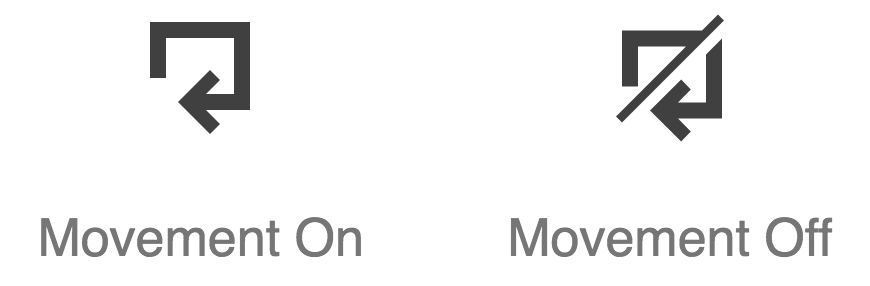

Content
Accessible iconography
The following is a set of accessibility best practices for working with BBC icons.
When to use icons
Text is the primary form of communication on the web, and is highly interoperable. Only use icons where additional clarity is sought. Icons may help those with cognitive impairments, and others who find themselves on a page that isn't in their first language.
In most cases, icons should accompany text. Only where icons are extremely well-established—such as the play and stop buttons of a media player—is it reliable to use them without supplementary text.
Creating icons
A comprehensive and standardized set of BBC icons is available. It is not recommended you create your own iconography. Cognition depends heavily on convention, and only by using established iconography can you foster familiarity.
Avoid icon fonts
The BBC icons are intended for implementation using inline SVG. Like icon fonts, SVG icons are infinitely scalable without degradation.
Unlike SVG, icon fonts icons are mapped to unicode points and interpreted as text. This can have accessibility issues. Most icon font sets map their icons to the unicode Private Use Areas in order to avoid overriding established, meaningful characters and symbols. A problem occurs when users set their own fonts, using an extension or user stylesheet: the icons are replaced with 'missing character' symbols. Dyslexic users sometimes set their own fonts for improved legibility.
Icon font icons mapped to established characters are equally problematic. A close icon mapped to an 'A' would reveal itself as an 'A' when the font is overridden. Also, screen readers would interpret and announce the icon as 'A'.
Labeling
All interactive controls need accessible labels, whether provided by text nodes or auxiliary attributes like aria-labelledby. Depending on how you incorporate icons into your controls, you need to choose an appropriate labeling method.
Icon with text
In cases where both the icon and accompanying text are visible, ensure the text is within the control element. The following example is for a download link. Note that the icon must be to the left of the text.
<a href="link/to/download" download>
<svg>
<use xlink:href="assets/svg/gel-icons-core-set.svg#gel-icon-download"></use>
</svg>
<span>Download</span>
</a>
Since the icon is not directly labeled, it will be ignored by assistive technologies and the calculated accessible name for the link will simply be "Download". Do not provide alternative text / labels for icons where text is already available.
In the following incorrect example, the SVG takes the img role and an aria-label in order to be perceived as an <img /> with alt text. The repetitious output becomes "link, download, download", "link, graphic: download, download" or similar (depending on the assistive software in use).
<!-- Avoid this -->
<a href="link/to/download" download>
<svg role="img" aria-label="download">
<use xlink:href="assets/svg/gel-icons-core-set.svg#gel-icon-download"></use>
</svg>
<span>Download</span>
</a>
Standalone icon
Where only an icon is provided in the visual design, a supplementary invisible label is needed. The method from the previous section, using role="img" and aria-label is one method. However, aria-label is not a string automatically translated by translation services. Instead, hide the <span> visually, but leave it available to assistive technologies. Note class="visually-hidden" below:
<a href="link/to/download" download>
<svg>
<use xlink:href="assets/svg/gel-icons-core-set.svg#gel-icon-download"></use>
</svg>
<span class="visually-hidden">Download</span>
</a>
The visually-hidden class is formed like this:
.visually-hidden {
clip-path: inset(100%);
clip: rect(1px, 1px, 1px, 1px);
height: 1px;
overflow: hidden;
position: absolute;
white-space: nowrap;
width: 1px;
}
Tooltips
If the icon has a tooltip, the tooltip can act as the primary label.
In the following example, the class="tooltip" element provides the label.
<a href="link/to/download" download>
<svg>
<use xlink:href="assets/svg/gel-icons-core-set.svg#gel-icon-download"></use>
</svg>
<span class="tooltip">Download</span>
</a>
By default, the tooltip would be hidden using display: none. It would be revealed on the :hover and :focus events.
[download] .tooltip {
display: none;
}
[download]:hover .tooltip,
[download]:focus .tooltip {
display: block;
}
Important: Do not rely on the title attribute for your tooltips. These do not appear on focus, and are therefore not keyboard accessible.
If the tooltip element appears outside the control, associate it to the control element using aria-labelledby. In the following example, aria-labelledby and the tooltip's id share the value "download-tooltip".
<div class="download-container">
<a href="link/to/download" download aria-labelledby="download-tooltip">
<svg>
<use xlink:href="assets/svg/gel-icons-core-set.svg#gel-icon-download"></use>
</svg>
</a>
<span class="tooltip" id="download-tooltip">Download</span>
</div>
Focus
Icons used in controls would rarely need to be focusable themselves, because the (outer) control would receive focus instead. You should not, therefore, add tabindex="0" to icon SVGs.
Unfortunately, SVGs are focusable by default in Internet Explorer and some versions of Edge. To suppress focus in these browsers, you will need to add focusable="false" to the SVG itself.
<a href="link/to/download" download>
<svg focusable="false">
<use xlink:href="assets/svg/gel-icons-core-set.svg#gel-icon-download"></use>
</svg>
<span class="visually-hidden">Download</span>
</a>
Color
The usual WCAG rules for color contrast apply to icons, although the impact of icons with inadequate contrast is likely to be less critical than text. As with text, the larger the icon the more minimal the impact of low contrast. There is no good reason, however, to consider low contrast combinations under any circumstances.
High Contrast Mode
In Windows High Contrast Mode, the text color is augmented to become very dark or very light. SVG icons are typically used alongside text like icon font icons. So that they adopt the same high contrast color of the text, use currentColor. For the BBC icons in the demonstration page this is already implemented. For reference, this is how it would be applied in CSS:
svg {
fill: currentColor;
}
Note that SVG uses fill, not color.
Color independence
Controls often exist in changing states: active, disabled etc. It's important these states are not communicated in color alone, as outlined in WCAG 1.4.1 Use of Color. Otherwise they will not be perceivable to some color blind users, and others using non-color displays.
The movement icons get around this by using a diagonal line-through style for the "off" state (pictured).
.